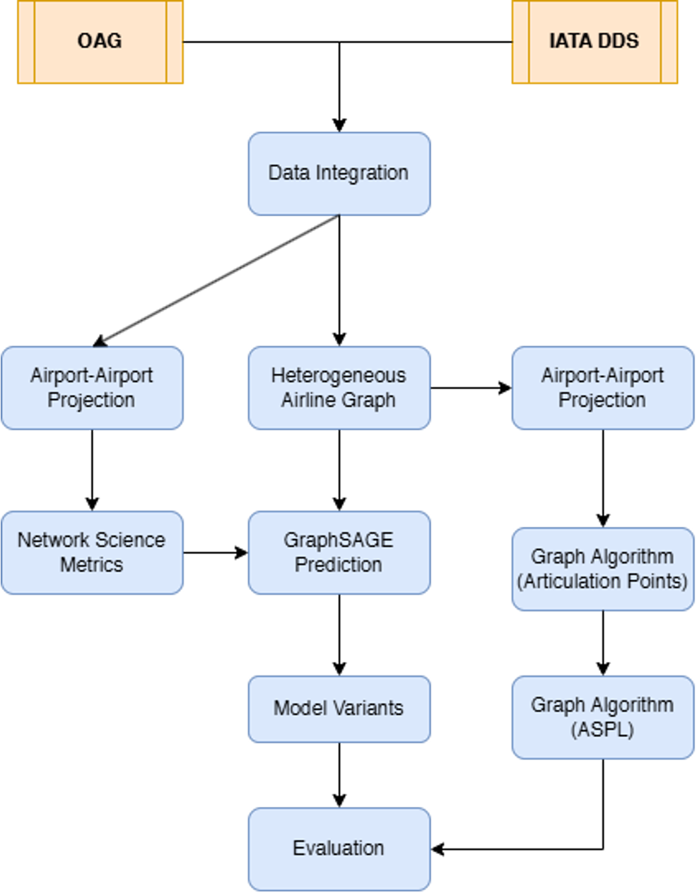

Graph Neural Networks for Airline Networks
Master thesis with Lufthansa Group. Joined airline schedules with ticketing records into a unified heterogeneous graph and trained an inductive GraphSAGE architecture to forecast passenger demand.
Key Highlights:
- Achieved 0.846 R² on unseen validation seasons
- Inductive learning generalises to completely new airport nodes
- Network vulnerability analysis highlights critical disruption points with alternative route rerouting
- Delivered and defended directly to the Network Planning team
PyTorch GeometricPySparkDatabricksGraphSAGE